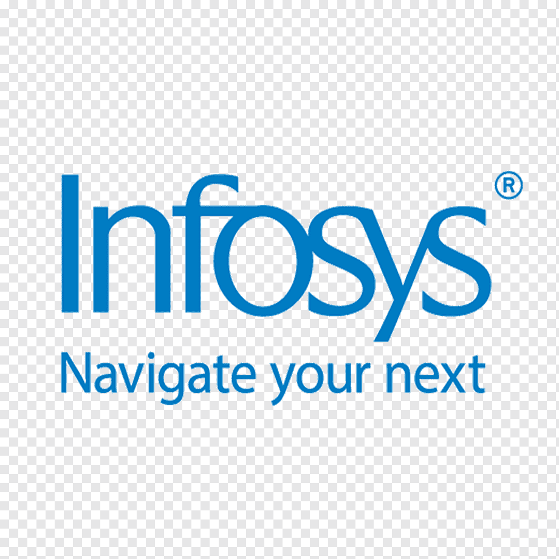

Professional Summary
My professional journey and key technical roles.
GenAI-Powered Data Analytics Job Simulation
Tata Group · Financial Services Team (via Forage) August 15, 2026Completed a job simulation involving AI-powered data analytics and strategy development for the Financial Services team at Tata iQ.
- Completed a job simulation involving AI-powered data analytics and strategy development for the Financial Services team at Tata iQ.
- Conducted exploratory data analysis (EDA) using GenAI tools to assess data quality, identify risk indicators, and structure insights for predictive modeling.
- Proposed and justified an initial no-code predictive modeling framework to assess customer delinquency risk, leveraging GenAI for structured model logic and evaluation criteria.
- Designed an AI-driven collections strategy leveraging agentic AI and automation, incorporating ethical AI principles, regulatory compliance, and scalable implementation frameworks.
Data Analytics & Commercial Insights Job Simulation
Quantium · Data Science Team (via Forage) January 28, 2026Completed a job simulation focused on Data Analytics and Commercial Insights for the data science team at Quantium.
- Completed a job simulation focused on Data Analytics and Commercial Insights for the data science team.
- Developed expertise in data preparation and customer analytics, utilizing transaction datasets to extract valuable insights and deliver data-driven commercial recommendations.
- Extended analytical capabilities to identify benchmark stores for conducting uplift testing on trial store layouts, enabling evidence-based decision-making.
- Leveraged acquired data analytics and insights from previous tasks to create comprehensive reports for the Category Manager, facilitating informed strategic decisions and enhancing commercial applications.

Systems Engineer
Infosys Ltd – Chennai, India · Client: Novartis (Healthcare / Medicare) Sep 2021 – Nov 2022Delivered enterprise data engineering and analytics for Novartis Healthcare Claims, processing 100K+ monthly records across Member, Medical Claims, Drug Claims, and Provider domains for Medicare-eligible individuals (65+).
- Built and maintained robust SQL and SSIS ETL pipelines processing 100K+ records monthly across Member, Drug Claims, Medical Claims, and Provider domains to match Medicare-eligible individuals (65+) to suitable plans.
- Partnered with Milliman actuarial consultants to translate vendor feedback into plan-suitability logic, raising recommendation accuracy to 85%.
- Designed SQL validation and reconciliation checks that held data accuracy at 95%, reducing downstream rework and improving vendor plan-selection efficiency by 40%.
- Developed stored procedures, views, and triggers, tuned slow-running queries, and triaged data incidents in ServiceNow within an Agile delivery team.
Systems Engineer Trainee
Infosys, Mysore, India May 2021 – Sep 2021Underwent intensive technical training covering full-stack development, database management, and professional soft skills.
Generic Training
- Java: Object-Oriented Programming (OOP), Classes & Objects, Inheritance, Polymorphism, Abstraction, Encapsulation, Methods & Constructors, Packages, Exception Handling, Multithreading.
- DBMS: Database Management System fundamentals and SQL.
- Achieved A+ grade in all Foundation Assessments (FA's).
Specific Training
- .NET: In-depth concepts and application development.
- Web Technologies: HTML, CSS Basics, JavaScript & TypeScript.
- Achieved A+ grade in all Foundation Assessments (FA's).
Soft Skill Training
- Mastered essential professional skills: Communication, Interpersonal, Leadership, Problem-Solving, Emotional Intelligence, and Ethics.
- Completed Business Communication English Programme certification (Levels 1-5).
CAPSTONE PROJECT: Travelaway
Objective: Developed a comprehensive travel management solution to streamline flight, hotel, and rental car bookings for corporate and leisure travelers, focusing on efficiency and user experience.